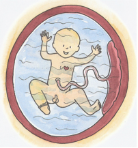
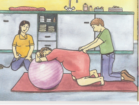
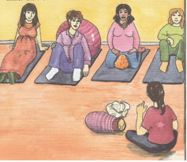

(aus: Was macht eigentlich eine Hebamme?
Von Tara R. Franke)
PRAKTISCHE HINWEISE FÜR DIE VORBEREITUNGSKURSE
Seit 1991 biete ich luxemburgische und französiche Gruppenkurse an und habe sie in all diesen Jahren immer wieder an die Bedürfnisse der werdenden Eltern angepasst. Ich biete sie in Luxemburg/Belair, in Angelsberg und in Schoos ( zwischen Angelsberg und Fischbach bei Mersch ) an.
Die Vorträge sind nach Themen gegliedert und können komplett oder einzeln gebucht werden, mit oder ohne Partner. ( Am besten natürlich mit Partner).
Bei jeder Begegnung wird ein anderes Thema während ungefähr eineinhalb Stunden behandelt. Während und nach meinem Votrag werde ich alle Ihre Fragen zu diesem Thema beantworten. Zu jedem Thema erhalten Sie eine passende Dokumentation wo Sie später, bei Bedarf, nochmal alles nachlesen können.
Auf Nach- und Anfrage können die Kurse eventuel auch in deutscher Sprache ( aber nur in Schoos) angeboten werden. Falls es in einem Kurs weniger als 4 Teilnehmer gibt, nehme ich mir das Recht den Kurs auf einen späteren Zeitpunkt zu verlegen.
Privatkurse können auch stattfinden, kosten allerdings mehr.
ZIEL MEINER VORBEREITUNGSKURSE
Ich biete Ihnen Kurse an um Sie optimal auf die Geburt, das Stillen, und das Leben mit dem Neugeborenen vorzubereiten. Desweiteren liegt mir am Herzen Ihnen die anfängliche Adaptation an die neue Situation zu erklären und Sie mit der Elternrolle vertraut zu machen. Denn Sie wurden nicht als Eltern geboren und fühlen sich eventuel des öfteren verunsichert und alleine gelassen in Ihrer neuen Situation.
Durch meine theoretischen Vorträge, wo selbstverständlich Ihr Partner willkommen ist, versuche ich Ihnen neutrale Informationen zu geben, so dass Sie sich Ihre eigene Meinung über das "Eltern werden" machen können. In all den Jahren habe ich gemerkt dass junge Paare oft zu sehr von allen Seiten unter Druck gesetzt werden und bei einer Fülle von Meinungen nicht mehr wissen was sie eigentlich selbst fühlen und wollen.
Mein Ziel ist es, in einer entspannten Atmospäre, Ihre Fragen zu beantworten und Ihre Ängste zu nehmen.
INHALT MEINER VORBEREITUNGSKURSE
1) DIE SCHWANGERSCHAFT.
- Dauer, Verlauf und Beschwerden in der Schwangerschaft.
- Wie kann man die Schwangerschaftsbeschwerden beheben?

(aus: Was macht eigentlich eine Hebamme?
Von Tara R. Franke)
(aus: Was macht eigentlich
eine Hebamme?
Von Tara R. Franke)
- Die Gewichtszunahme und die Ernährung.
- Auf was sollte die schwangere Frau während der 9 Monate achten?
- Die Sorgen und Ängste der werdenden Mutter und warum sie manchmal himmelhochjauchzend oder zu Tode betrübt sein kann.
- Was es heißt Vater zu werden und worüber sich werdende Väter Sorgen machen.
2) DIE GEBURT.
- Die Wehen und der Blasensprung.
- Die 3 Phasen der Geburt.
- Die anstrengende Übergangsphase und das Pressen.
- Die Geburt des Kindes und die Nachgeburtsperiode. ( Ich zeige Ihnen anhand eines "mannequins" wie Ihr Baby das Licht der Welt erblickt.)

( aus: Was macht eigentlich eine Hebamme?
Von Tara R. Franke)
- Die Rolle des Vaters und wie er helfen kann.
- Die Bekämpfung des Schmerzes mittels Zäpfchen, Lokalanästhesie oder Periduralanästhesie.
- Die Geburt mittels Saugglocke oder Zange.
- Der Kaiserschnitt.
- Die sanfte Geburt.
DAS NEUGEBORENE.
- Wie sieht Ihr Neugeborenes eigentlich aus?
- Welche Tests werden gleich nach der Geburt mit Ihrem Baby durchgeführt?

( aus: Was macht eigentlich eine Hebamme?
Tara R. Franke)
- Warum haben es Babys so schwer in der Adaptationsphase?
- Warum verlieren die Neugeborenen am Anfang an Gewicht?
- Welche Kinderarztkontrollen sind vorgesehen?
- Warum weinen Babys und wie kann man helfen?
- Was tun bei Neugeborenengelbsucht?
3) DAS STILLEN. - Die Muttermilch ist das Beste für Ihr Kind. - Die erste Brustmahlzeit gleich nach der Geburt. - Was tun beim Milcheinschuss? - Was ist zu beachten damit Ihr Baby erfolgreich saugt? Welche Stillpositionen gibt es?
( aus: Was macht eigentlich eine Hebamme?
von Tara R. Franke)
( aus: Was macht eigentlich eine Hebamme?
Von Tara R. Franke)

( aus: Was macht eigentlich eine Hebamme?
Von Tara R.Franke)